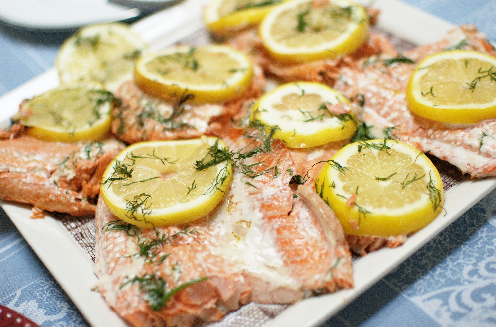

Home
Salmon with Lemon and Dill

Description
I love fish and salmon is one of my favorites; just that rich flavor is lovely
The recipe is superb and very easy.
Ingredients
- 1 pound salmon fillets
- ¼ cup butter, melted
- 5 tablespoons lemon juice
- ¼ teaspoon garlic powder
- sea salt and freshly ground black pepper to taste
Steps
- Gather the ingredients. Preheat the oven to 350 degrees F (175 degrees C). Lightly
grease a medium baking dish.
- Place salmon in the baking dish.
- Mix butter and lemon juice in a small bowl, and drizzle over salmon. Season with dill,
garlic powder, sea salt, and pepper.
- Bake in the preheated oven until salmon is easily flaked with a fork, about 25 minutes.
- Serve and enjoy!